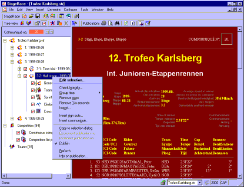

Work Space
The StageRace work space consists of these parts:
-
Menus
The main source for accessing all available functions -
Context-sensitive menus
A fast way of accessing the functions
that apply to a certain context -
Tool bars
A visual aid for rapidly accessing frequently
used functions -
Status bar
A small strip containing status information
-
Accelerator keys
A way for rapidly accessing frequently
used functions -
Event tree
The main axis of StageRace for navigating all
in a StageRace event -
Work views
A view for working more detailedly with items
in a StageRace event
Additionally, the following dialogs are used for various tasks:
-
Arrival dialog
-
Time trial starting order dialog
-
Sign outs dialog
-
Communiqué dialog

Work space